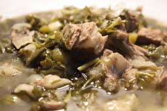

ჩაქაფული დეტალიური რეცეპტი და ინგრედიენტები
ინგრედიენტები:
ტყემალი
მარილი და წიწაკა
ძმარი
მწვანე ხახვი
ტარხუნა
ოხრახუში
ქინძი
თეთრი ღვინო
ხახვი
ცხვრის ან ბატკნის ხორცი
მომზადების ნაბიჯები
მწვანილი კარგად გავრეცხოთ, გადავარჩიოთ და დავჭრათ.ოხრახუში, კინძი და მწვანე ხახვი წვრილად დავჭრათ თავი ხახვი დავჭრათ მრგვალად.ტარხუნას მოვაცალოთ ღეროები, დავტოვოთ მხოლოდ ფოთლები.ჩაქაფულისთვის საჭიროა ბატკნის უკანა ნაწილის ნაჭერი. ხორცი გავრეცხოთ და დავჭრათ მსხვილ ნაჭრებად. ხორცს მოვაცალოთ ქონი, დავჭრათ წვრილ ნაჭრებად და ჩავყაროთ ქვაბში. შევბრაწოთ სანამ ქონი არ გადნება. შებრაწული ქონის ნაჭრები ამოვიღოთ და გამდნარ ქონში ჩავყაროთ ხორცი.
15 წუთის შემდეგ:
15 წუთის შემდეგ ჩავყაროთ დაჭრილი 1 თავი ხახვი. ჩავშუშოთ სანამ სითხე არ აორთქლდება.როგორც კი სითხე აორთქლდება, ქვაბში ჩავასხათ ღვინო და გავაგრძელოთ ხარშვა. თანდათან დავამატოთ მწვანილი, ჩავყაროთ ტყემალი და გავაგრძელოთ ხარშვა დაბალ ცეცხლზე.ვხარშოთ 15-20 წუთის განმავლობაში, სანამ მწვანილი არ დარბილდება და გამუქდება. დავაყაროთ მარილი და ძმარი გემოვნებით.
კერძის წარმოშობის ისტორია
ჩაქაფულის ისტორია- ძველი ქართული რეცეპტი
არავინ იცის პირველად ვის მოუვიდა თავში აზრად, რომ პირშუშხა წიწმატის, არომატული ტარხუნის, ახლადგამონასკვული ტყემლისა და ქორფა ბატკნის ხორცისგან ის საგაზაფხულო მრავალხმიანობა შეექმნა, რომელსაც დღეს ჩაქაფულს ვუწოდებთ.
სავარაუდოდ, იგი აღმოსავლეთ საქართველოს კულინარიული კულტურის პირმშოა, რადგან მის შემადგენლობაში მყოფი ორი უმთავრესი პროდუქტი - ცხვრის ხორცი და ტარხუნა ქართლ-კახური კერძებისთვის არის დამახასიათებელი. ამასთან, ტარხუნისთვის უფრო ხელსაყრელი სწორედ ამ რეგიონში არსებული მშრალი ჰავაა. დასავლეთ საქართველოში ცხვრის ხორცი ნაკლებ პოპულარულია (თუკი რა თქმა უნდა, ე.წ. ტელეფას ცხვრის ჩაქაფულს არ ვიგულისხმებთ, ან ანტიკურ საქართველოში არ გავიჭრებით და “ოქროს საწმისის” ისტორიას არ გავიხსენებთ). იქ ძირითადად ამ კერძს ციკნის, ხბოს ან დეკეულის ხორცისაგან ამზადებენ.
ჩაქაფულის ტრადიციული რეცეპტის შემადგენლობაში სწორედ ბატკნის ხორცი დომინირებს. კერძის გემოს და განსხვავებულ სურნელს მნიშვნელოვანწილად განსაზღვრავს ტარხუნა, მასში შემავალი ეთერზეთების წყალობით. ჩაქაფულის სახელწოდება მისივე მომზადების ტექნოლოგიაში უნდა ვეძებოთ ხორცი იხარშება მოქაფვის გარეშე მწვანილთან და სხვა ინგრედიენტებთან ერთად. მწვანილთა სახეობა და რაოდენობა შეგვიძლია საკუთარი გემოვნებით ვარეგულიროთ წიწმატი, მჟაუნა, ქინძი, ოხრახუში, მცირეოდენი პიტნა და კამა მდიდარ არომატულ თაიგულს ქმნის, ხოლო ტარხუნა მას დასრულებულ სახეს აძლევს. ამ უკანასკნელის დაკლება და მითუმეტეს, რეცეპტიდან სრულებით ამოღება, აბსოლუტურად შეცვლის კერძს და სულ სხვა გემოზე წაიყვანს. რაც შეხება ტყემალს, აქაც საგულისხმოა ის საკითხი, რომ მისი კურკა გამაგრებული უნდა იყოს, წინააღმდეგ შემთხვევაში, კურკის მწარე გული გასკდება და მისი მომწარო წვენი კერძს უსიამოვნო გემოს შესძენს. რიგ შემთხვევებში ჩაქაფულში გამოიყენებენ წინასწარ სპეციალურად დაკონსერვებულ ტყემალს. რა თქმა უნდა, სულ არარაობას კი ჯობს ასე შენახული ტყემლის გამოყენება, მაგრამ თუ გავითვალისწინებთ ჩაქაფულის მომზადების ტექნოლოგიას, მაინც სასურველია ახალი ტყემლის ხმარება. იგი კერძში ბოლოს იყრება და როგორც კი მოითუთქება, ჩაქაფული მზადაა. დაკონსერვებულ ტყემალი, ჯერ ერთი, ნაკლებ არომატულია და მეორე უკვე დათუთქულია, ამიტომ ერთიან მასად იქცევა ხოლმე და თავის ფორმას კარგავს.
რიგ შემთხვევაში, ჩაქაფულში მწვანე ხახვთან ერთად ძველ ხახვსაც ხმარობენ, ეს მას სისქეს აძლევს და ხახვის არომატს აძლიერებს. როდესაც ჩაქაფულს ვამზადებთ, უნდა გავითვალისწინოთ, რომ ხორცი იყოს ცხიმიანი, ამასთან სასურველია შევარჩიოთ მკერდისა და მხრის ნაჭერი. სრულებით უძვლო ხორცი უფრო მშრალია. ტრადიციად დამკვიდრდა ჩაქაფულში ღვინის დამატება. ის ცხვრის ხორცს არბილებს და დანარჩენ ინგრედიენტებსაც ღვინისთვის დამახასიათებელ გემოს აძლევს. ამ შემთხვევაში კერძი გამოდის უფრო წვნიანი და მსუბუქი. თუ ღვინოს ვუმატებთ, მაშინ ტყემლის რაოდენობა უნდა შევამციროთ, ვინაიდან, შეიძლება წვენი ძალიან მჟავე გამოვიდეს. სასურველია, გამოვიყენოთ თეთრი მშრალი ღვინო. კახეთში საამისოდ ქვევრში დაყენებულ რქაწითელს ხმარობენ. შავი ღვინო არ არის რეკომენდირებული, უფრო ფერის გამო - ჩაქაფულის წვენს გაამუქებს. უღვინოდ მომზადებული ჩაქაფული უფრო სქელია და მის მჟავე გემოს განსაზღვრავს ტყემლის რაოდენობა. სიმჟავეზე თავის გავლენას ახდენს ასევე მჟაუნაც. მზარეულთა ნაწილი ღვინის გამოყენებას არ გვირჩევს. ისინი თვლიან, რომ ღვინის გემო ჩრდილავს ხორცისა და მწვანილეულისგან შექმნილ არომატულ თაიგულს. მეორე ნაწილი თვლის, რომ ჩაქაფული პირდაპირ ღვინოში უნდა მოიხარშოს წყლის გარეშე ალკოჰოლი კერძის გემოს უფრო ამდიდრებს და სწორედ ეს გემო გამოარჩევს ჩაქაფულს სხვა კერძებისაგან. გარდა ამისა, სწორი ტექნოლოგიით მომზადებული ჩაქაფული არ ვნებს ორგანიზმს, იგი წარმოადგენს მწვანილებთან და ტყემალთან ერთად მოხარშულ ხორცს, რომელსაც ემატება ღვინო და ამდენად, ადვილი მოსანელებელია ორგანიზმისთვის. ვინაიდან მწვანილს დიდხანს ხარშვა არ უწევს, ინარჩუნებს სასარგებლო ნივთიერებათა დიდ ნაწილს. იქნებ, სწორედ ამიტომ გვიჩნდება გაზაფხულზე ჩაქაფულის მონატრება, რომ ნაზამთრი ორგანიზმისათვის აუცილებელია ვიტამინებით გამდიდრებული საკვები? ვინ იცის...
საერთოდ, რამდენი კაციც არის, იმდენნაირია გემოვნებაც, ჩაქაფული კი ის კერძია, რომელიც იმპროვიზაციის დიდ საშუალებას იძლევა და მივცეთ ჩვენს ფანტაზიას გასაქანი. როგორც პაპაჩემი ამბობდა “რა რეცეპტი, რის რეცეპტი? დაკუწე ბატკანი, აიღე ერთი ტაშტი ტარხუნა და დანარჩენი მწვანილი, რაც კი ბოსტანში მოგეპოვება, დააყარე ხორცს, მოასხი ღვინო, მოაყარე ტყემალი და მოხარშე! ეგეც შენი ჩაქაფული!”
